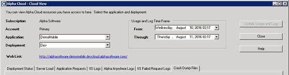
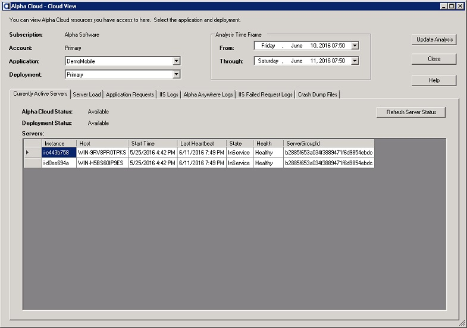
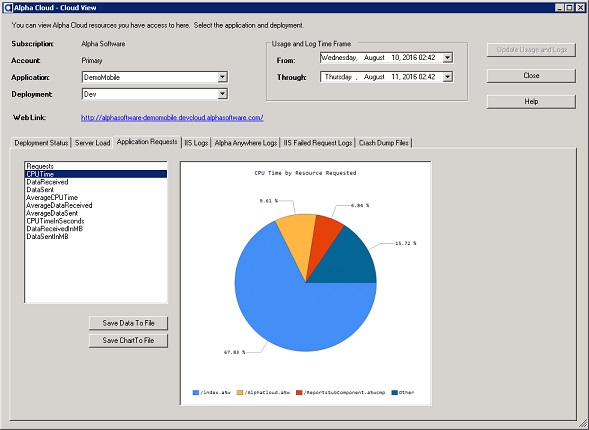

Alpha Cloud - Alpha Anywhere Developer's Guide
The Cloud View Dialog
The Currently Active Servers Tab Page
The Server Load Tab Page
The ApplicationRequests Tab Page
The IIS Logs Tab Page
The Alpha Anywhere Logs Tab Page
The Cloud View dialog provides access to status, activity and logs for applications you have deployed on Alpha Cloud.
- Select the application and the deployment of that application you want to look at.
- The Currently Active Servers tab page will show all servers running your deployed application along with their status.
- Select a date range to analyze and click the Update Analysis button to retrieve activity and lists of logs for that date range.
- When the analysis is complete, the Server Load, Application Requests, IIS Logs and Alpha Anywhere Logs tab pages will be populated.

View a Full Sized Image
Each windows server that is running your application deployment is displayed on the Currently Active Servers tab page. The columns displayed are:
- Instance
- A unique identifier assigned by the cloud infrastructure for the server.
- Host
- The windows host name assigned to the server. This can be used to find IIS and Alpha Anywhere logs for a specific server.
- Start Time
- The date and time the Alpha Anywhere software started running on the server. This is the time the server became available to service requests.
- Last Heartbeat
- The last date and time the Alpha Anywhere software running on the server reported that it was running.
- State
- The cloud infrastructure reported state of the server instance. An instances may be initializing, in service, terminating or terminated. After a period of time, terminated servers are removed from the list.
- Health
- The cloud infrastructure reported health of the server, based on it's ability to respond on the network. Running servers will generally be reported as "Healthy" unless there is a problem.

View a Full Sized Image
As your deployed application handles requests Alpha Cloud tracks activity for a number of metrics. The metrics are summarized in fifteen minute increments. The Server Load tab page displays charts for each of those metrics for the period of time you select as your analysis time frame at the top of the Cloud View dialog. Selecting the metric on the left will show the appropriate chart on the right-hand side of the tab page.
Note: The metrics are most useful as a comparison of activity over time rather than an absolute value.
The metrics available are:
- Requests
- The number of requests handled by your deployed application on all active servers during the time frame you selected.
- CPU Time
- The total CPU time required to service requests on all active servers during the time frame you selected.
- Data Received
- The total number of bytes of data received from browsers by your deployed application on all active servers during the time frame you selected.
- Data Sent
- The total number of bytes of data sent to browsers by your deployed application on all active servers during the time frame you selected.
- Average CPU Time
- The average CPU time required to service each request on all active servers during the time frame you selected.
- Average Data Received
- The average number of bytes of data received from browsers for each request by your deployed application on all active servers during the time frame you selected.
- Average Data Sent
- The average number of bytes of data sent to browsers for each request by your deployed application on all active servers during the time frame you selected.
- CPU Time In Seconds
- The total CPU time (in seconds) required to service requests on all active servers during the time frame you selected.
- Data Received in Megabytes
- The total number of megabytes of data received from browsers by your deployed application on all active servers during the time frame you selected.
- Data Sent in Megabytes
- The total number of megabytes of data sent to browsers by your deployed application on all active servers during the time frame you selected.
View a Full Sized Image
Saving Data and Charts You can save the data used to create the chart by clicking the button labeled "Save Data To File".
To save the current chart to an image file, click the button labeled "Save Chart To File".
As your deployed application handles requests Alpha Cloud tracks activity for a number of metrics. The metrics are summarized in fifteen minute increments for each requested resource. These can include web pages, images, reports, and AJAX callbacks. The Application Requests tab page displays charts for the most active resources requested for each of the recorded metrics for the period of time you select as your analysis time frame at the top of the Cloud View dialog. Selecting the metric on the left will show the appropriate chart on the right-hand side of the tab page.
Note: These charts can be useful in identifying the most active or expensive resource requests in your application.
The metrics available are:
- Requests
- The number of requests for the resource on all active servers during the time frame you selected.
- CPU Time
- The total CPU time required to service requests for the resource on all active servers during the time frame you selected.
- Data Received
- The total number of bytes of data received from browsers when requesting the resource on all active servers during the time frame you selected.
- Data Sent
- The total number of bytes of data sent to browsers when requesting the resource on all active servers during the time frame you selected.
- Average CPU Time
- The average CPU time required to service requests for the resource on all active servers during the time frame you selected.
- Average Data Received
- The average number of bytes of data received from browsers when requesting the resource on all active servers during the time frame you selected.
- Average Data Sent
- The average number of bytes of data sent to browsers for each request of the resource on all active servers during the time frame you selected.
- CPU Time In Seconds
- The total CPU time (in seconds) required to service requests for the resource on all active servers during the time frame you selected.
- Data Received in Megabytes
- The total number of megabytes of data received from browsers when requesting the resource on all active servers during the time frame you selected.
- Data Sent in Megabytes
- The total number of megabytes of data sent to browsers on all active servers for the requested resource during the time frame you selected.

View a Full Sized Image
Saving Data and Charts You can save the data used to create the chart by clicking the button labeled "Save Data To File".
To save the current chart to an image file, click the button labeled "Save Chart To File".
IIs creates log files for your application to record requests for resources. These can include web pages, images, reports, and AJAX callbacks.
Alpha Cloud configures the Advanced Logging Module from Microsoft to create one log for each deployed application each hour that your application is deployed on that server. Alpha Cloud automatically copies the logs from the running server to cloud storage. The logs can be retrieved and reviewed at a later time even if the server itself is terminated.
The IIS Logs tab page lists the logs created during the time you specified as your analysis time frame and presents them in a tree view display by host name and then date and time and then displays them again by date and time and then by host name. If you open the tree view to the lowest level in the tree and double click on that entry, the log is retrieved and displayed in the text box on the right-hand pane of the dialog.

View a Full Sized Image
When Alpha Anywhere for IIS runs on the cloud, all error logging and tracing is consolidated into a single file. There is one file for each server and each hour that your application deployed.
Alpha Cloud automatically copies the logs from the running server to cloud storage. The logs can be retrieved and reviewed at a later time, even if the server itself is terminated.
The Alpha Anywhere Logs tab page lists the logs created during the time you specified as your analysis time frame and presents them in a tree view display by host name and then date and time and then displays them again by date and time and then by host name.
If you open the tree view to the lowest level in the tree and double click on that entry, the log is retrieved and displayed on the right hand- pane of the dialog.
The display pane for Alpha Anywhere logs has two tabs within it.
- The Content tab displays the data from the log by column, making it easier to scan.
- The Text tab displays the raw contents of the log (a CSV formatted file) making individual entries easier to read.
View a Full Sized Image
View a Full Sized Image
{kind=link}
{kind=link}
{kind=link}
{kind=link}
{kind=link}
{kind=link}
{kind=link}